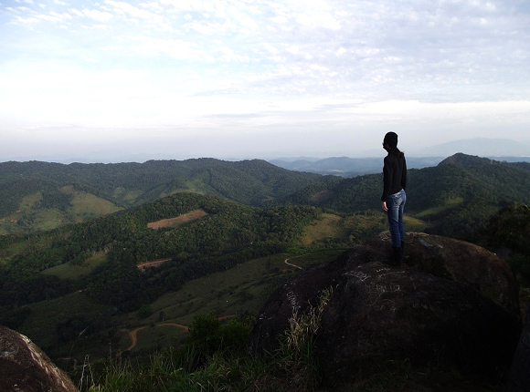
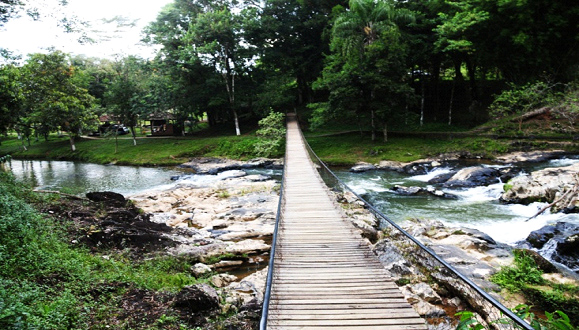

Criado em 2008, o parque integra o Mosaico de Unidades de Conservação do Jacupiranga, junto com outras 13 unidades. São mais de 40 mil hectares distribuídos entre os municípios de Barra do Turvo, Cajati, Eldorado e Iporanga. Com o objetivo de proteger um dos biomas mais ameaçados do mundo – a Mata Atlântica - , o parque tem como principal atrativo a Caverna do Diabo, uma das maiores cavernas do estado, com mais de 6.000 m de extensão. Conta ainda com trilhas e cachoeiras, que oferecem bons momentos de lazer, aventura e descanso. Destaque ainda para a fauna e a flora – das mais ricas e variadas – registrando animais como jacutingas, onças e macacos, além de árvores nativas como araçás, guapuruvus e palmitos-juçaras. O Parque Estadual da Caverna do Diabo era parte do antigo Parque Estadual do Jacupiranga, criado em 1969 e subdividido em 2008, o que resultou na criação dos parques do Rio Turvo e do Lagamar de Cananeia, além de outras unidades, formando o Mosaico de Unidades de Conservação do Jacupiranga. A Caverna do Diabo é conhecida publicamente desde 1891.
O Mirante do Cruzeiro é uma imponente montanha com 510 metros de altitude de onde é possível, em dias claros e sem nebulosidade, avistar vários locais como o mar (a 58km de distância), toda a cidade de Eldorado e outras cidades do Vale, além do belo e sinuoso curso do rio Ribeira.Para se chegar ao topo, percorre-se uma trilha de aproximadamente 1,5km com trechos mesclando entre média e forte inclinação. O topo é aberto, quase sem vegetação, e com rochas expostas, o que facilita a visualização da paisagem em todos os ângulos. Com frequência pode-se observar diversas espécies de pássaros e outros animais silvestres.
O Salto da Usina é um local onde antigamente existiu uma das primeiras hidrelétricas do Estado de São Paulo, a qual operou da década de 20 até meados da década de 50,do século passado. A Usina era responsável por gerar energia elétrica para toda a comunidade de Xiririca, hoje Eldorado. O ribeirão Xiririca é o principal atrativo do parque, com água cristalina, corredeiras, pequenas quedas e piscinas naturais para banho. O local, conta ainda com uma infraestrutura de lanchonete, sanitários com chuveiros, quiosques equipados com churrasqueiras, água potável encanada e energia elétrica, quadra de futebol de areia, lago, trilhas pela mata, ponte pênsil de madeira e estacionamento.
PONTOS TURÍSTICO DA NOSSA CIDADE